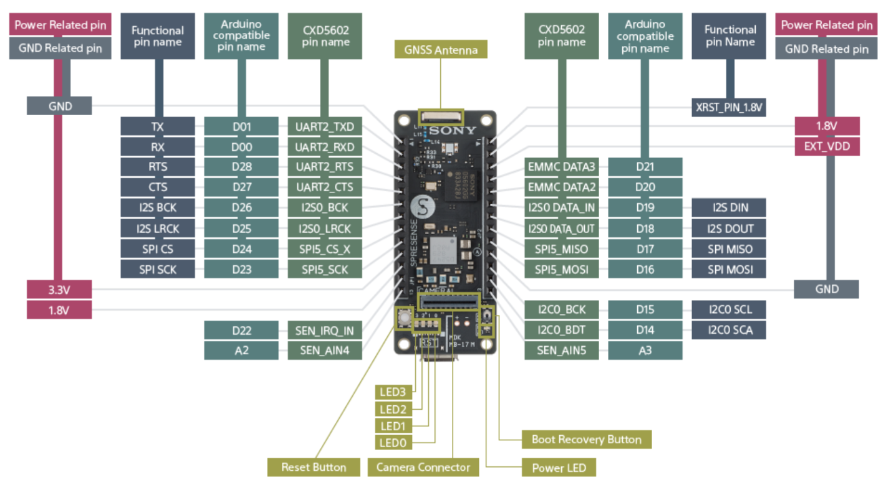
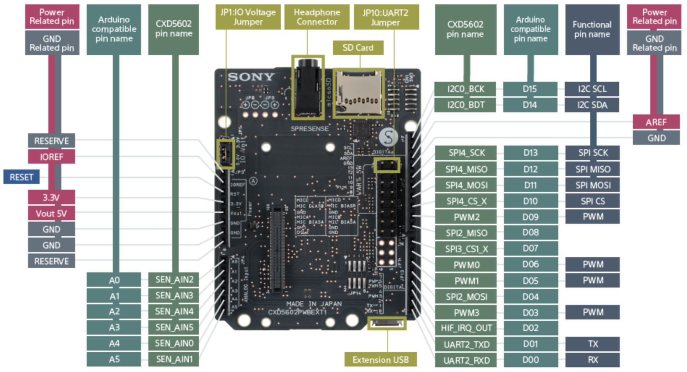
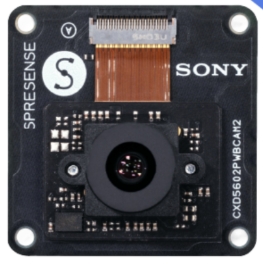

Sony Spresense
The Spresense is a compact development board based on Sony’s power-efficient multicore microcontroller CXD5602. It allows developers to create IoT applications in a very short time and is supported by the Arduino IDE as well as the more advanced NuttX based SDK.
Key features:
Integrated GNSS: the embedded GNSS with support for GPS, QZSS and GLONASS enables applications where tracking is required.
Hi-res audio output and multi mic inputs: advanced 192 kHz/24 bit audio codec and amplifier for audio output, and support for up to 8 mic input channels.
Multicore microcontroller: Spresense is powered by Sony’s CXD5602 microcontroller (ARM® Cortex®-M4F × 6 cores), with a clock speed of 156 MHz.

Spresense main board pinout (functional, Arduino-compatible and CXD5602 pin names)
Extension Board
The Spresense extension board exposes the main board signals on an Arduino-compatible header layout and adds a microSD card slot, a headphone jack and multiple microphone inputs.

Spresense extension (base) board pinout
Camera Board
The CXD5602PWBCAM2 camera board connects to the dedicated camera connector on
the main board and is supported by the video/imager drivers.

Spresense camera board (CXD5602PWBCAM2)
Features
Sony CXD5602 microcontroller (ARM® Cortex®-M4F × 6 cores @ 156 MHz)
8 MB SPI-Flash (main board), 1.5 MB SRAM
Integrated GNSS (GPS, QZSS, GLONASS)
Hi-res audio codec, up to 8 mic input channels
Camera interface (CXD5602PWBCAM2 support)
Arduino Uno compatible pin layout (via extension board)
microSD card slot (via extension board)
4 user LEDs and Reset / Boot Recovery buttons
Note
To run NuttX, the bootloader for Spresense SDK 2.1.0 or later must be installed on the board. See Flashing the bootloader below.
Serial Console
The default serial console is UART2, exposed on the D00 (RX) and
D01 (TX) Arduino-compatible pins and routed to the USB connector through
the on-board USB-to-serial bridge. It shows up on the host as
/dev/ttyUSB0 (Linux) or /dev/cu.SLAB_USBtoUART (macOS) at 115200 baud,
8N1.
Flashing the bootloader
Before flashing any NuttX image, the Spresense loader/bootloader binaries must
be installed. Download the loader package matching your SDK version from the
Spresense firmware download page
and flash all of its files at once with flash_writer.py:
./tools/flash_writer.py -s -c /dev/ttyUSB0 -d -b 115200 -n \
/path/to/spresense-binaries/*.espk \
/path/to/spresense-binaries/*.spk
The -n (--no-set-bootable) option is used because these are loader
components, not the bootable application. The tool relies on the Python
xmodem module (pip install xmodem or apt install python3-xmodem).
Building and Flashing
Once the bootloader is in place, configure, build and flash any of the
board configurations below. Replace <example> with the configuration
name you want (e.g. wifi, smp, elf):
$ ./tools/configure.sh spresense:<example>
$ make -j
$ ./tools/flash_writer.py -s -c /dev/ttyUSB0 -d -b 115200 nuttx.spk
The resulting nuttx.spk is flashed without -n so it is marked as
the bootable application. Adjust /dev/ttyUSB0 to match the serial port of
your board.
Configurations
Each of the following can be selected as <example> in the
Building and Flashing step above.
audio
Audio playback and capture using the CXD5602 on-chip audio subsystem
(CONFIG_AUDIO_CXD56).
audio_sdk
Audio configuration using the SDK audio stack with microSD storage
(CONFIG_AUDIO together with SDIO/MMCSD).
camera
Camera capture using the ISX012/ISX019 image sensors through the NuttX video stream interface.
charger
Battery charger example (apps/examples/charger) exercising the CXD5602
power-management/charger interface.
coremark
EEMBC CoreMark CPU benchmark (CONFIG_BENCHMARK_COREMARK).
elf
Tests apps/examples/elf (loading and running ELF programs).
example_camera
Camera capture example with live preview on an attached LCD
(apps/examples/camera).
example_lcd
NX graphics demos (nxdemo, nxhello, nxlines) rendered on an
attached LCD.
fmsynth
FM sound synthesizer example (apps/examples/fmsynth).
getprime
getprime timing/stress test (apps/testing/getprime).
lcd
LCD support together with a USB composite device (CDC/ACM + mass storage).
lte
LTE connectivity using the Spresense LTE extension board (Altair ALT1250 modem).
module
Tests apps/examples/module (loadable kernel modules).
mpy
Peripheral demonstration enabling the on-chip ADC, PWM, the camera interface
and microSD automount, started from the board spresense_main entry point.
nsh
Basic NuttShell (NSH) console over the serial port.
nsh_automount
NSH with automatic mounting of an inserted microSD card.
nsh_trace
NSH with the system trace subsystem enabled for scheduler/syscall tracing.
ostest
Standard NuttX OS test suite (apps/testing/ostest).
posix_spawn
Tests apps/examples/posix_spawn.
rndis
USB RNDIS Ethernet gadget with networking examples (FTP client/server, web server and tcpblaster).
rndis_composite
Same as rndis but exposed as part of a USB composite device.
rndis_smp
Same as rndis but running in SMP mode across the CXD5602 cores.
smp
Runs Spresense in SMP (symmetric multiprocessing) mode.
usbmsc
USB Mass Storage device example, exposing a microSD card as a USB drive via a composite (CDC/ACM + MSC) gadget.
usbnsh
NuttShell console over USB CDC/ACM instead of the physical UART.
wifi
This is a configuration for Spresense + Wi-Fi add-on (Telit GS2200M) module. With this configuration you can either (1) connect Spresense to an existing Wi-Fi access point (2.4 GHz 802.11b/g/n are supported) or (2) make Spresense act as a Wi-Fi access point. In both cases you can log in to the Spresense over telnet and access a web server (NOTE: for this you need an extension board with a microSDHC card).
(1) Station (STA) mode
To run the module in Station mode (i.e. to connect to an existing Wi-Fi access point), specify the SSID with its passcode:
nsh> gs2200m ssid-to-connect passcode &
If the connection succeeded, an IP address is statically assigned:
nsh> ifconfig
wlan0 Link encap:Ethernet HWaddr 3c:95:09:00:69:92 at UP
inet addr:10.0.0.2 DRaddr:10.0.0.1 Mask:255.255.255.0
You can then run the DHCP client (renew command) to obtain an IP address as
well as DNS server information. (NOTE: in the current configuration the DHCP
client on the GS2200M is disabled. If you enable the internal DHCP client you
cannot use the DNS client on NuttX):
nsh> renew wlan0 &
renew [6:100]
nsh> ifconfig
wlan0 Link encap:Ethernet HWaddr 3c:95:09:00:69:92 at UP
inet addr:192.168.1.101 DRaddr:192.168.1.1 Mask:255.255.255.0
Now you can run telnetd and the web server on Spresense:
nsh> telnetd &
telnetd [7:100]
nsh> webserver &
webserver [9:100]
nsh> Starting webserver
You can also run the NTP client to adjust the RTC on Spresense. (NOTE: this
assumes your network can reach pool.ntp.org, otherwise specify
CONFIG_NETUTILS_NTPCLIENT_SERVER):
nsh> date
Jan 01 00:00:36 1970
nsh> ntpcstart
Started the NTP daemon as PID=11
nsh> date
Jul 30 06:42:13 2019
(2) Access Point (AP) mode
To run the module in AP mode, specify the SSID to advertise and a WPA2-PSK
passphrase or WEP key. (NOTE: in AP mode you can also specify the channel number
to use. Also, set CONFIG_WL_GS2200M_ENABLE_WEP=y if you want to use WEP
instead of WPA2-PSK):
nsh> gs2200m -a ssid-to-advertise 8-to-63-wpa2-psk-passphrase &
or
nsh> gs2200m -a ssid-to-advertise 10-hex-digits-wep-key &
If the module was initialized in AP mode, a new IP address is assigned:
nsh> ifconfig
wlan0 Link encap:Ethernet HWaddr 3c:95:09:00:69:93 at UP
inet addr:192.168.11.1 DRaddr:192.168.11.1 Mask:255.255.255.0
Now you can connect your PC to the AP with the above SSID and WPA2-PSK passphrase or WEP key that you specified.
wifi_smp
Same as wifi but running in SMP mode across the CXD5602 cores.